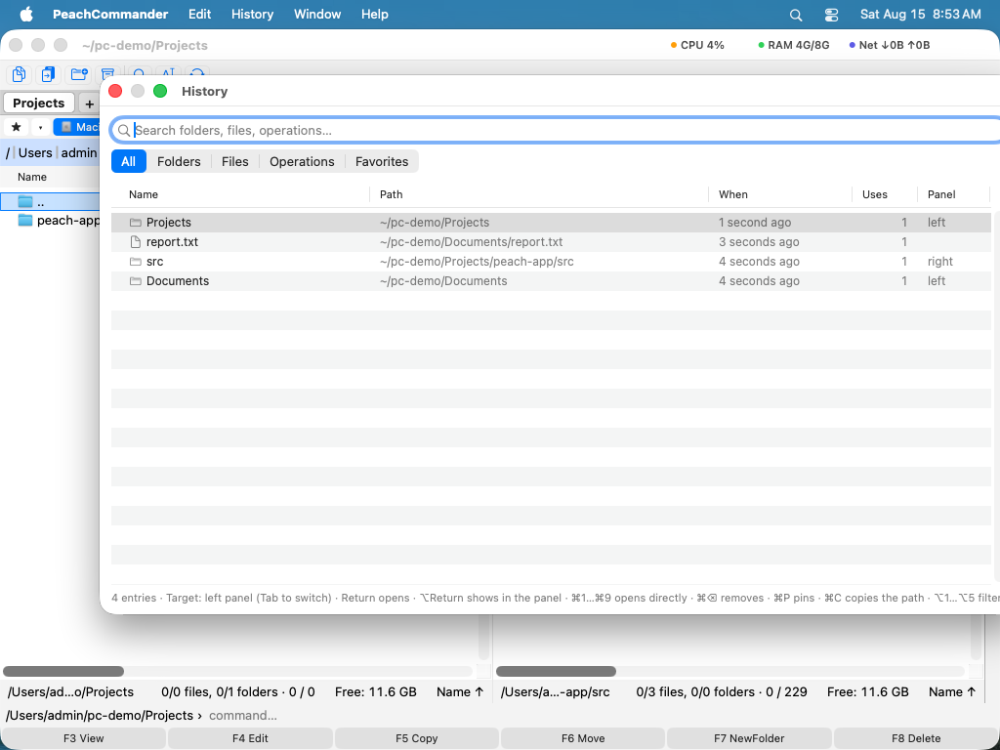

Global history
The global history is one window that remembers your own working history: folders you visited, files you opened, operations you carried out and commands you ran. Press Ctrl+Cmd+H from anywhere, start typing, and you are back at yesterday's folder in a second — without the mouse.
Open the history
- Press Ctrl+Cmd+H, or choose Go > History…. It does not matter which panel is active.
- Type a few letters. The match need not be exact or contiguous:
proj repfinds~/Projects/annual-report.txt. - Move through the results with the Up and Down arrow keys while you keep typing.
- Press Return to act on the highlighted entry, or Esc to close the window.
Entries are ranked by how recently and how often you used them, so the places you work in most are already near the top. Pinned entries always lead the list.

(Figure: The global history — the search field has focus, and the list is ranked by how recently and how often you used each entry.)Filter by kind
The buttons under the search field limit the list to all entries, folders, files, operations or favorites. Option+1 to Option+5 switch between them from the keyboard.
Act on an entry
| Action | Shortcut |
|---|---|
| Open the highlighted entry | Return |
| Show it in the panel, with the cursor on it | Option+Return |
| Open one of the nine most relevant entries | Cmd+1 … Cmd+9 |
| Switch the panel entries open in | Tab |
| Pin or unpin the entry | Cmd+P |
| Remove the entry from the history | Cmd+Delete |
| Copy the entry's path | Option+Cmd+C |
| Show the entry in the Finder | Cmd+Shift+R |
| Close the history | Esc |
Return does what the entry deserves: a folder opens in the target panel, a file opens as it would in the panel, and a command line is placed in the command line for you to check and run. The target panel is named at the bottom of the window and Tab switches it.
Repeat an operation
A copy or a move appears under Operations, and Return runs it again — the same items to the same folder, through the normal transfer queue and its overwrite questions. Items that no longer exist are skipped, and if none are left you are told.
Deletes and renames are listed but never repeated: Return shows you where they happened instead. Repeating a delete should not be one keystroke away in a list you are skimming.
Keep it under control
Settings ▸ Misc decides whether a history is kept at all, how many entries to hold and after how many days to forget them. Pinned entries are exempt and 0 days keeps everything; the list lives in history.ini in your configuration folder and survives restarts.
Notes
- Opening something from the history counts as using it, which is why what you return to keeps rising.
- Folders inside an archive, on a server or in a plugin drive are not remembered: such a path means nothing without the mount that produced it, and the panel's own history keeps them while it is open.
- This is not the panel's own folder history on Alt+Down, which lists where that one panel has been, in order.